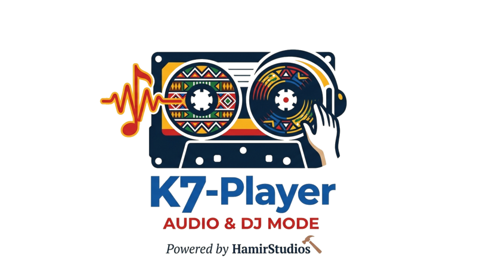

O teu media player, o teu palco
⏳ Em desenvolvimentoO K7-Player será um media player gratuito, sem anúncios e 100% offline para Android. Toca todos os formatos de áudio mais usados — e traz uma funcionalidade que nenhuma app gratuita oferece: um modo DJ completo.
Ouvir música é simples. Mixar música devia também ser. O K7-Player junta as duas coisas numa app só, com um design angolano moderno e sem cobrar nada.
Toca os formatos mais usados em Angola e no mundo, sem conversões nem limitações:
Tudo o que precisas para ouvir e criar música, num só lugar:
Toca todos os formatos de áudio. Interface limpa, gestos simples, e suporte a playlists.
Transforma o teu telemóvel numa mesa de DJ profissional com dois decks, faders e crossfader.
Aplica filtros, echos, reverbs e samples durante a reprodução — como numa mesa de DJ física.
Organiza por artista, álbum, género ou pasta. Importa e exporta playlists facilmente.
Interface moderna com as cores da marca K7. Cada detalhe pensado com identidade angolana.
Sem internet. Sem anúncios. Sem tracking. A tua música é só tua.
O K7-Player é o único media player gratuito no mercado com um modo DJ completo integrado. Sem apps separadas, sem subscrições, sem limites.
Carrega duas músicas em simultâneo, controla cada uma individualmente, e mistura-as em tempo real.
Crossfader para transições suaves. Equalizador de 3 bandas em cada deck. Controle total sobre o som.
Ajusta a velocidade das músicas para alinhar batidas. Detecção automática de BPM.
Carrega samples e dispara-os durante a performance. Ideal para DJs de kizomba, semba, house e hip-hop.
Filtros, echos, reverbs e loops — tudo aplicável em tempo real, como numa mesa profissional.
Uma mesa de DJ completa no teu bolso. Funciona sem internet, em qualquer lugar.
O K7-Player está em fase inicial de desenvolvimento. Ainda não tem data de lançamento definida.
És DJ, produtor ou simplesmente apaixonado por música? Queremos ouvir-te.
Contactar a HamirStudios